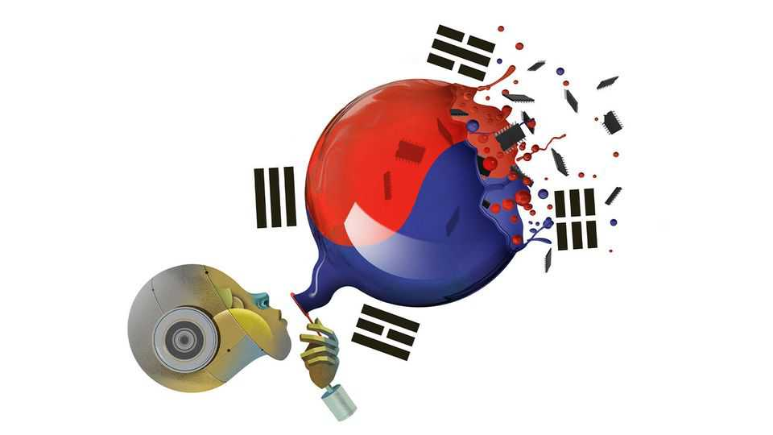

South Korea’s stock-market boom is collapsing spectacularly
It may be a harbinger

Jul 30th 2026
America’s giant technology companies have gone from printing money to incinerating it. The market reckons Alphabet, Amazon, Meta and Microsoft will collectively report negative free cashflows next year, owing to their extravagant spending on data centres. Yet real fortunes are being made today from Silicon Valley’s gamble on the future.
Three companies are expected to surpass an astonishing $200bn of free cashflow apiece next year. One is Nvidia, an American darling that designs the advanced processors needed to run artificial-intelligence models. The other two are Samsung and SK Hynix, a pair of South Korean outfits that dominate the market for the more mundane memory chips in phones, laptops and, increasingly, data centres. Their windfall represents one of the greatest cross-border transfers of cash in corporate history.
Now a nation newly enamoured of stock markets is discovering that shares can go down as well as up. Since peaking in June the stock prices of Samsung and SK Hynix have crashed by 41% and 52% respectively, wiping $1.2trn from South Korea’s highly concentrated stock market. Those of SK Hynix fell by more than a fifth this week as investors digested a mere six-fold increase in its quarterly operating profit, compared with the year before. Samsung’s shares have not been this volatile since the dotcom era.
South Korea is a great experiment in mixing the extremes of state capitalism and market speculation. Last year, after a failed coup, the country’s president attempted to cheer his country by talking up the stock market (sound familiar?). The KOSpI, its main index, speedily hit a level the government had set as a target.
Ordinary South Koreans withdrew capital from insurers and banks to invest in stocks. Workers threatened industrial action to secure Wall Street-sized bonuses. Those at SK Hynix and Samsung’s chip division settled for an extraordinary 10% of operating profits. At SK Hynix that could amount to $500,000 a person this year, and $800,000 next year. (Goldman Sachs paid a meagre average of $400,000 in total compensation to its employees last year.)
Now a government that just weeks ago was embracing markets is being forced to apologise for them. It was only in April that regulators approved leveraged exchange-traded funds (ETFs) tied to individual South Korean stocks. These funds use derivatives to give investors a multiple of the daily return of a share. For example, if SK Hynix is up by 1%, an investor might receive 2%; or if it is down by 10%, an investor might jump out of a window.
When the selling began in June broker accounts faced margin calls and were shut down by the thousand, causing regulators to suspend new ETF launches. At an emergency meeting on July 29th politicians promised to severely limit the use of these funds. One compared the market to a casino. Shares in the country’s department stores are crashing as fast as those of its chipmakers, in anticipation of the handbags that will now remain on the shelves.
The trillion-dollar question for investors in South Korea is when the price of memory will peak. Bulls argue that data-centre construction and robotics mean demand for memory will outstrip supply into the 2030s. But the increasingly common view is that the same thing will happen to memory chips as has happened to every commodity in every commodity cycle in history—that new supply will, within a year or two, cause prices and profits to fall. Despite their vertiginous rise, Samsung and SK Hynix have on average traded only at single-digit multiples of forward earnings during the past year, suggesting that investors think their profits are at or near their highest point.
Perhaps it is inevitable that the first country to taste the riches promised by AI should be the first to have them taken away. No industry can survive if all the rewards are concentrated in one corner of the supply chain. Yet the dangers facing South Korea’s memory giants are also lurking elsewhere in the AI landscape.
First is the dreaded “commoditisation”. The sales of less advanced memory chips by SK Hynix and Samsung are threatened by the rising market share of Chinese competitors (one of which went public this week to great fanfare). So too are America’s model-makers, which face a potentially existential threat from Chinese open-source models.
Second is the risk that supposedly ironclad spending commitments from customers turn out to be no such thing. Both South Korean firms have made much of their “long-term agreements” with buyers, arguing that pre-payment and price certainty gives them visibility on profits for years to come. Yet judicious investors have begun to fear that customers will find ways of wriggling out of deals when it is advantageous for them to do so. Investors also worry how airtight lease agreements for data centres would prove if model-makers tried to get out of them in a bust. The piles of debt tied to Meta’s giant off-balance-sheet data centre have drawn particular scrutiny.
Nvidia has played an important role in stabilising this precarious situation. Jensen Huang, its leather-jacketed chief executive, has something to say on every debate: last week he published an influential letter in defence of open-source models. But his cheque-book is more important. Mr Huang has constructed a vest web of financial ties that keep the party going. This week it was reported that his company is in talks to guarantee $250bn of commitments from OpenAI, maker of ChatGPT, to lease a data centre. More remarkable still is the vague “$500bn” partnership with SK Hynix it announced over the weekend, and how little that seemed to matter to investors this week. Like a central banker meddling in markets, the more Mr Huang intervenes the more nervous investors become. The eventual bust will be all the worse for it. ■